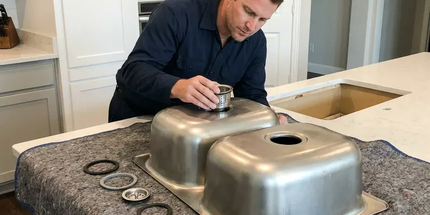
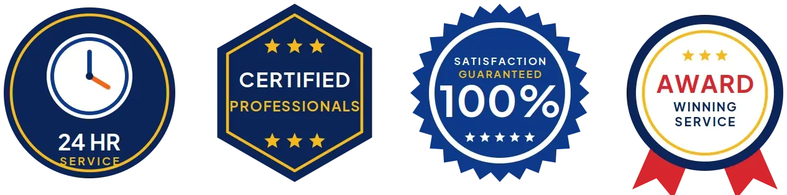
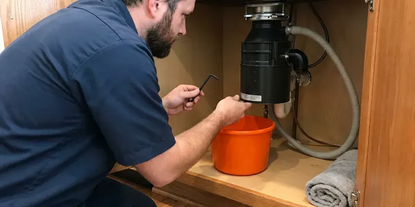
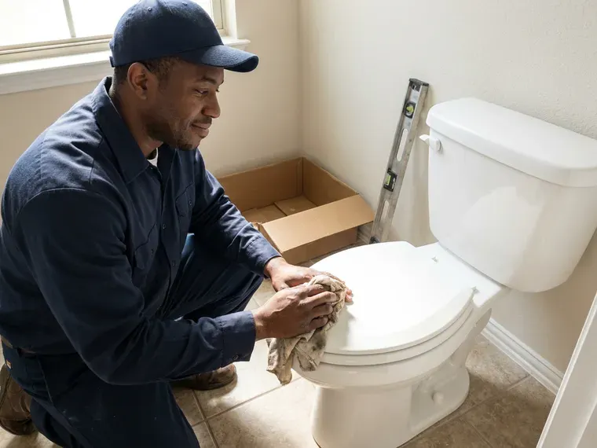
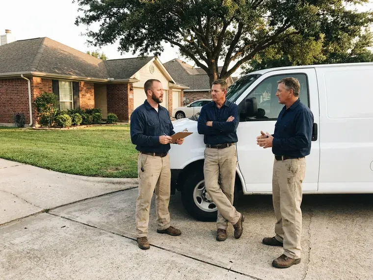
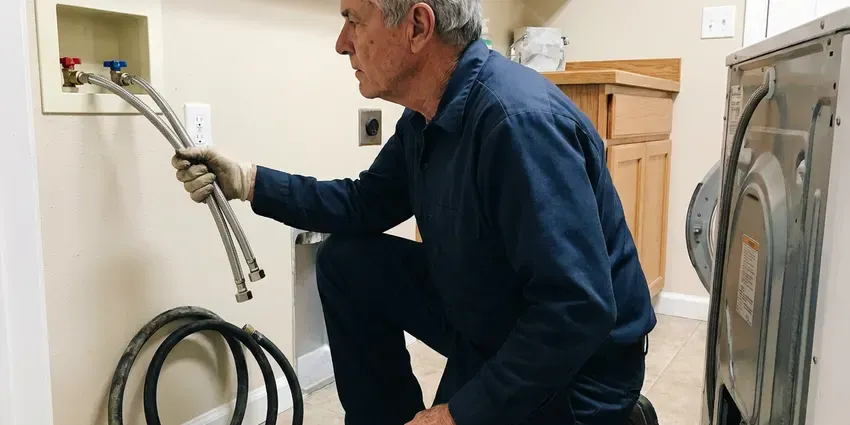
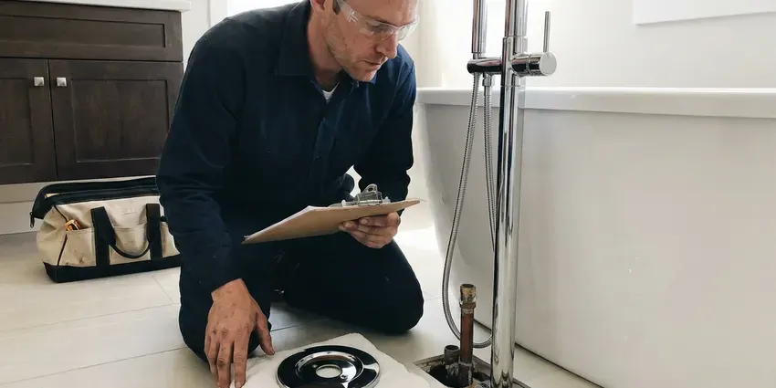
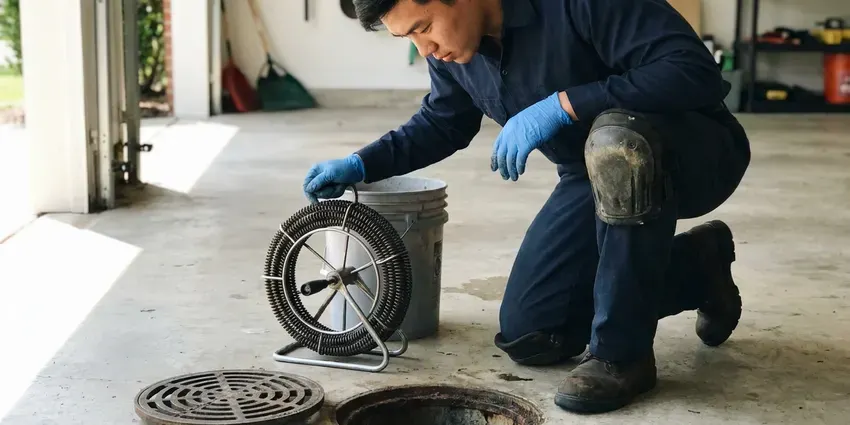

Grease Trap Installation in Pontiac, MI
CHV Plumbing sets hydromechanical traps and gravity interceptors in Pontiac, MI, built to pass.
- Permit Paperwork Handled
- Same-Week Site Visits
- Overnight Installs Available
- Flow Control Installed
Need a Grease Trap Installed in Pontiac, MI?
Bring your plans. We check sizing against the local FOG rules.
Indoor Traps and Outdoor Interceptors in Pontiac, MI
CHV Plumbing installs grease traps and interceptors for restaurants and commercial kitchens in Pontiac, MI, from 10 GPM under-sink units to buried tanks over 1,000 gallons. Sizing is where most trouble starts. We calculate flow from your actual fixtures and check the number against what the local sewer authority requires before anything is ordered.
Our expertise includes:
- Automatic grease removal units
- Slab cutting and concrete patching
- Units certified to PDI G-101 or ASME

Additional Kitchen Plumbing Services in Pontiac, MI
Our kitchen plumbing services in Pontiac, MI cover sinks, disposals, dishwashers, and grease traps so your kitchen stays clean, safe, and fully functional.


Kitchen Sink Installation near Pontiac

Pontiac garbage disposal repair specialists


Customers
Why Choose CHV Plumbing for Grease Trap Installation in Pontiac, MI?
Sewer authorities trace grease blockages back to the building that caused them. Get traced and you may pay for the cleanup and face more inspections. That costs more than a trap. We install units that meet the local pretreatment rules from the start, with a sampling point where the program requires one and paperwork you can hand the inspector.
- Written Labor Warranty, Our workmanship coverage is in writing before we start.
- Licensed Plumbers, Licensed commercial plumbers set every trap, not laborers with a van.
- Permit Handled, The permit and sizing calculation go in under our license and book the inspections.
Citywide Coverage
From a single coffee bar to a commissary serving a dozen food trucks, we cover grease trap installs throughout the Pontiac area. The size changes. Our sizing method and our inspection checklist stay the same on every job.
Experienced Team
Every tech on our grease trap crew carries a laser level and a sewer camera, because a trap set out of level or tied into a broken line will fail early. Both get checked before the lid goes on. Mistakes get caught on site. A second set of eyes checks every sizing calculation.
Safety-First Approach
Cutting a slab in an operating kitchen throws silica dust, so we use wet saws and a vacuum and seal off the work area with plastic. Food prep areas stay covered. After the cut, we patch to match the floor and let the health inspector see a clean, sealed surface before you reopen. Dust control is not optional.
Trusted Certified Pontiac Plumbing Services Professionals
At CHV Plumbing, we are proud to offer certified plumbing services throughout Pontiac, MI. Those papers on the wall mean something. Every repair, install and maintenance visit follows strict safety and quality rules, and the plumbers doing the work carry recognized industry credentials.
Call Us Now PHCC Plumbing Contractor Recognition
PHCC Plumbing Contractor Recognition Better Business Bureau (BBB) Accreditation
Better Business Bureau (BBB) Accreditation Angi Certified Pro
Angi Certified Pro ISO 9001 Quality Management Certification
ISO 9001 Quality Management CertificationGrease Traps and Interceptors Set in Pontiac, MI
Food Truck Commissary and Ghost Kitchen Traps in Pontiac, MI
Commissary kitchens see a dozen trucks dumping wash water in the same two hours, which is a different load from a restaurant spreading it over a long shift. Sizing has to cover that short, heavy spike. Shared delivery-only kitchens can have more sinks per square foot than any dining room, and the trap must handle all of them. Each brand's prep sink counts.

Grease Trap Brands We Install in Pontiac
Zurn, Watts, Schier and Endura cover most of what we set in commercial kitchens, plus precast concrete tanks for the big outdoor interceptors. The lid gaskets and baffles differ from brand to brand. Parts availability matters. We prefer models whose lids and gaskets are stocked nearby, because waiting a week on a part means waiting a week to reopen.
Grease Trap Sizing and Placement in Pontiac, MI
Sizing starts with fixture drain rates and ends with where the trap can physically go. Long runs to the trap let grease cool and coat the line, so we keep the trap as close to the fixtures as we can. Closer is better. For outdoor tanks we measure the hose run from where a pump truck can park.
Under-Sink Grease Trap Setup in Pontiac, MI
Small cafes and coffee bars often get by with a 10 to 25 GPM hydromechanical trap tucked under the prep sink or beside it. The unit goes on the floor or in a shallow recess, and the flow control fitting goes upstream. Clearance matters most. We leave room to pull the lid and baffle without unhooking the sink, because a trap nobody can open is a trap nobody cleans.
Emergency Grease Trap Services in Pontiac, MI
A grease trap backing up into the floor sinks at the start of Friday dinner service means a closed kitchen and a health inspector who may not let you reopen until it is fixed. First job is figuring out whether the clog is in the trap or the pipe on either side of it. Often it is the outlet. If the trap itself has failed, we can usually set a temporary unit and schedule the permanent replacement.
Commercial Kitchen Grease Trap Installs in Pontiac
Every commercial install starts with a fixture list. We count each sink, floor drain and dish machine that will tie in, then add the gallons per minute each one can dump. From there we pick a hydromechanical unit or a gravity tank and figure out where it can sit with a straight shot to the building sewer. Fewer bends, fewer clogs.
Hydro-Mechanical Grease Trap Installation in Pontiac, MI
Hydromechanical traps use baffles and a vented flow control to pull grease out of water moving at a set rate, usually 20 to 100 gallons per minute. They fit indoors, under a sink or in a floor pit. The flow control is not optional. Skip it and a full sink drain overruns the rating, which sends grease right past the baffles. We look for units certified to PDI G-101 or ASME A112.14.3.

Gravity Grease Interceptor Installation in Pontiac, MI
Concrete or polyethylene, a buried gravity interceptor is a two-compartment tank with tees on the inlet and outlet that reach down below the grease layer. Precast concrete weighs more and handles a parking lot better than plastic. Poly is easier to set. Plastic tanks in wet soil need hold-down straps or a concrete collar so they do not float when pumped.
Grease Trap Installation Near Pontiac, MI
Restaurant owners around Pontiac call us for new installs and the occasional emergency swap, and the phone at (810) 380-5918 is answered seven days a week. Weekend calls get a real person. For a backed-up trap we try to have a tech on site the same day so you do not lose a dinner service.
Searching for a grease trap installer near Pontiac usually means you have an inspection date or an opening date on the calendar. A tech can usually walk your kitchen within the week. The trucks are stocked with common traps and fittings, which saves a second visit on most indoor installs. Bigger tanks get ordered.
CHV Plumbing at a Glance
- Fully licensed plumbing team covering Pontiac, MI
- Same-day appointments and 24/7 emergency response
- Upfront, flat-rate pricing before work begins
- 4.9-star rated by 670+ Michigan customers
Pontiac Map
Pontiac Information
- Population
- 61,689
- Area codes
- 248/947/586
- Service area
- Pontiac and towns within a 40 mile drive
- Nearby
- Rochester Hills, Troy, Royal Oak, Southfield
Local pretreatment rules decide the size and type of interceptor a Pontiac, MI food business needs. Basements are the norm, so sump pumps, drain tile and perimeter drains are a big part of residential plumbing.
Talk to a Plumber
Reach out to CHV Plumbing for reliable plumbing work done by licensed pros in Pontiac, MI.
Our Specialized Plumbing Services in Pontiac, MI
At CHV Plumbing, we handle the full list of plumbing services across Pontiac, MI. We go from leak detection all the way to full system installations, for homes and commercial buildings, and we do it quickly at a fair price. Here are the core services we offer:

Plumbing Repair service for Pontiac homeowners

Bathroom Plumbing service for Pontiac homeowners



Local drain services by CHV Plumbing, Pontiac
How a Grease Trap Install Works in Pontiac, MI
Most of a grease trap job is planning. The install itself is often a single day in Pontiac.
Request a Quote
Call CHV Plumbing at (810) 380-5918 for a site visit. Bring your plans if it is a new build-out.
Size and Permit
We size the trap from your real fixture list and file the permit and sewer authority review.
Install and Inspect
We set it, test it and stay for the inspection. You get copies of the paperwork.
Frequently Asked Questions About Grease Trap Installation in Pontiac
Installed prices for small indoor hydromechanical traps typically fall between $1,500 and $5,000. Outdoor tanks cost more, mostly for digging and putting the site back. Brand is a small part of it. The written estimate holds unless the dig turns up a buried surprise.
An under-sink hydromechanical trap with good access is usually a half-day job, including the flow control and a leak test. Floor-recessed units take longer because we cut and patch concrete. Outdoor tanks are different. A buried interceptor runs two to five working days after permit, mostly driven by the dig and the paving repair.
Pump-outs every couple of weeks on a trap that used to go two months is the clearest sign you have outgrown it or the baffles have failed. Grease odor in the dining room is another. Rust shows up too. We also look downstream, because grease in the outlet pipe means the trap is letting it through.
Almost always, yes. Commercial grease traps fall under the plumbing permit, and many sewer authorities also want their own FOG approval on the size and model. We pull the permit, submit the sizing calculation and schedule the rough and final inspections. Expect an inspector on site.
Plan on a permit. Both the building department and the sewer authority usually have a say. You get copies of every approval for your files. Unpermitted traps cause trouble at lease transfer.
As close to the grease-producing fixtures as the space allows, so grease does not cool and coat the pipe before it reaches the trap. Leave room to open the lid and clean it without moving equipment. Never under a cook line. Outdoor interceptors go where a pump truck can park within reach of the hose and where the lids will not end up under a dumpster or a parked car.
Coverage comes from two places. The manufacturer warrants the trap body and lid, and the term depends on the brand and whether it is steel or plastic. We put our labor warranty in writing on the invoice, covering leaks at the joints we made and any problem with how we set and leveled the unit. Damage from skipped cleanings falls outside it.
In everyday talk the two names get swapped. Strictly, a grease trap is the small indoor unit rated in gallons per minute, and an interceptor is the large tank rated in gallons of capacity. Codes vary on the wording. Many codes say hydromechanical interceptor and gravity interceptor instead, and we match the local wording on the permit.
What People Are Saying About Our Plumbing Experts?

Rachel N.
Hard water was leaving white crust on every faucet and our dishwasher was struggling. The tech tested the water, recommended a softener sized for a family of five, and installed it with a bypass valve in one afternoon. The spots on our glasses are gone.
Water Softener · Southfield, MIBrian W.
I smelled gas behind the dryer and called right away. The plumber found a corroded flex connector, replaced it, and pressure tested the whole line before turning the gas back on. He let me watch the gauge hold steady for fifteen minutes.
Gas Line Repair · Rochester Hills, MIEmily R.
The shutoff valve under our kitchen sink snapped off in my hand on a Sunday morning. CHV Plumbing had someone out by early afternoon. He replaced both angle stops with quarter turn valves and showed me where our main shutoff was, which I honestly did not know.
Plumbing Repair · Farmington Hills, MIMark T.
The floor drain in our office break room backed up every few weeks. The plumber ran a cable, then put a camera down and found roots at a joint about thirty feet out. Seeing it on the screen made the decision easy.
Drain Cleaning · Troy, MIMegan L.
Our upstairs tub drained so slowly that every shower turned into a bath. CHV Plumbing pulled a wad of hair out of the stopper and then snaked the line past the trap. Three months later it still drains fast.
Drain Cleaning · Sterling Heights, MIKaren W.
After our third pinhole leak in copper, we stopped patching. CHV Plumbing gave us a written plan room by room and repiped the house in PEX while we stayed in it. The crew covered our floors every morning and cleaned up every night.
Repiping · Farmington Hills, MI